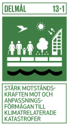
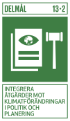
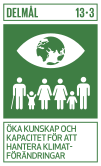
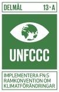
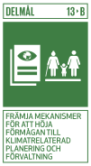
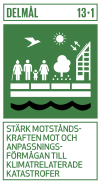
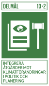
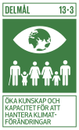
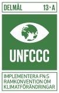
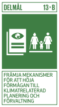
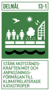
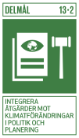
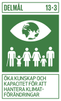
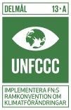
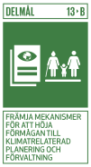
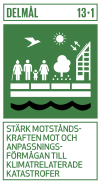
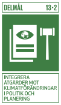
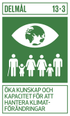
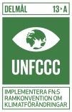
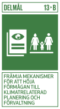
Den hållbara utvecklingen brukar generellt delas upp i social, ekonomisk och ekologisk hållbarhet. Det finns många tankar och perspektiv på hur dessa områden ska prioriteras och vilken som ska väga mest. Enligt en del modeller av hållbar utveckling tar ofta den ekologiska hållbarheten störst plats, vilket gör att fokus på klimat och miljö är centralt inom hållbar utveckling.
Jorden har genom tiderna genomgått många naturliga klimatförändringar, men de som sker idag går i betydligt snabbare takt och är i en hög grad som en orsak av påverkan från människor. Förbränning av fossila bränslen, skogsavverkning och andra industrier har ökat växthuseffekten som i sin tur lett till stigande temperaturer. Konsekvenserna av detta ses bland annat av smältande glaciärer, torka och översvämningar. Särskilt drabbade är vissa önationer som hotas av de stigande vattennivåerna.
“Bekämpa klimatförändringarna” är det 13:onde målet som är en del av FN:s globala mål i Agenda 2030. Målet innebär att åtgärder ska vidtas för att minska utsläppen av växthusgaser och att anpassa utvecklingen av samhället till de förändringar som redan sker. Konkret utgår arbetet med att bekämpa klimatförändringar från Klimatkonventionen och det tillhörande Parisavtalet. Parisavtalet togs fram av världens länder 2015 och innebär att den globala temperaturökningen ska begränsas till under 2°C, med en ambition att nå 1,5°C. Avtalet omfattar även stöd till de länder som drabbas mest av klimatförändringarnas effekter.
Det senaste årtiondet (2010-2019) har varit det varmaste som någonsin uppmätts. För att nå målen i Parisavtalet till 2030 hade de globala växthusgaserna behövt minska med ca 7,6 % per år, med start år 2020. Om den globala uppvärmningen fortsätter riskerar konsekvenserna att förvärras.
Eftersom klimatförändringarna i grunden påverkar förutsättningar för mänskligt liv och samhällsutvecklingen är den en kärna inom hållbar utveckling. Det krävs därmed att se till att utvecklingen bland annat inom energi, transport, jordbruk och industri, övergår till förnybara energikällor och en mer effektiv användning av jordens resurser.